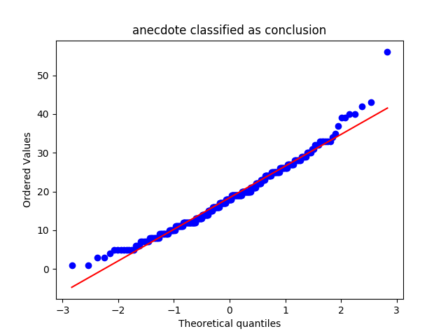
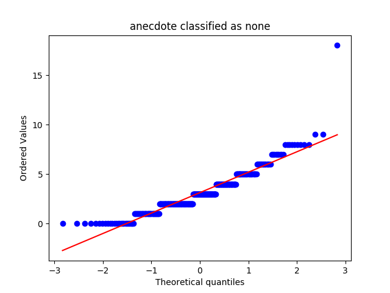
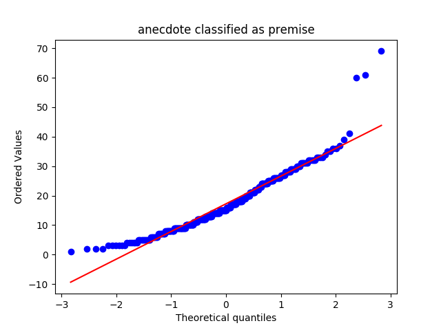
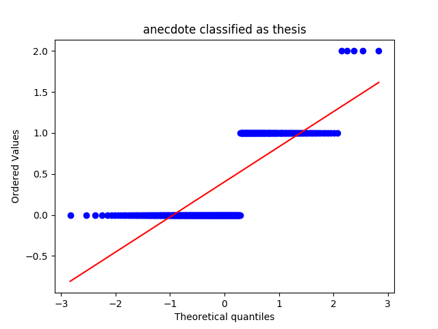
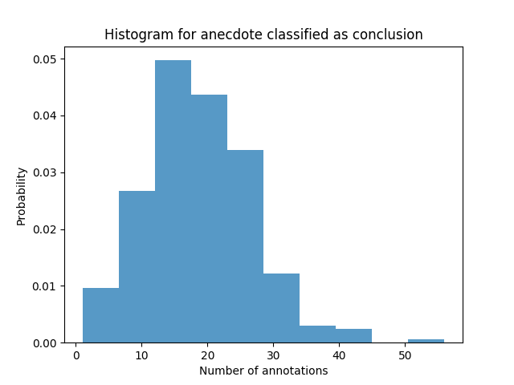
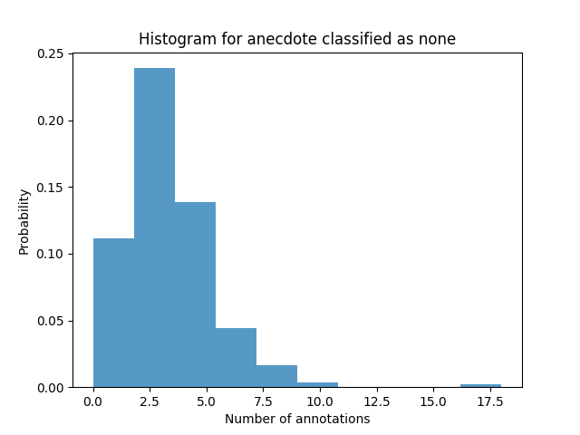
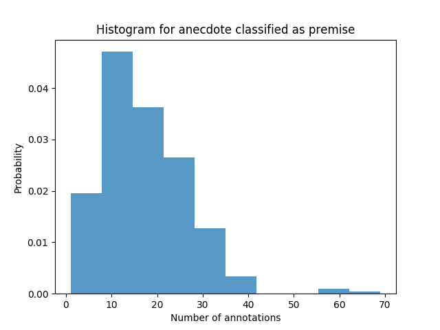
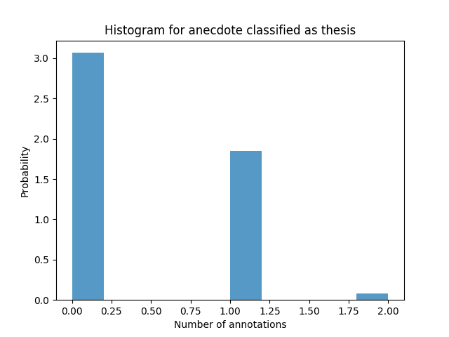
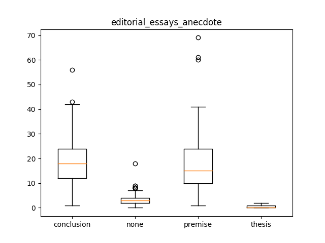

editorial_essays_anecdote
Describing the Data-Set
Mean, Median and Standard Deviation
|
conclusion |
none |
premise |
thesis |
| median |
18.000000 |
3.000000 |
15.000000 |
0.000000 |
| mean |
18.400000 |
3.136667 |
17.240000 |
0.403333 |
| std |
8.214621 |
2.167484 |
9.697546 |
0.523439 |
QQ Plots




Histograms




Box Plot(s)

Normalization Test
stat: 0.974863350391, p-val:4.0902326873e-05
Not Normally distributed for anecdote classified as conclusion
stat: 0.895572543144, p-val:1.64382545661e-13
Not Normally distributed for anecdote classified as none
stat: 0.923587024212, p-val:2.89832238071e-11
Not Normally distributed for anecdote classified as premise
stat: 0.656963407993, p-val:3.60469556767e-24
Not Normally distributed for anecdote classified as thesis
Significancy Test
Using friedmann-test
Using friedmann-test
using stats.friedmanchisquare
chisq: 760.628716216
p-value: 1.49509624696e-164
statistic: 1500.84349187
p-value: 1.11022302463e-16
chi2:750.487
ranking[1.9383333333333332, 1.1066666666666667, 3.4500000000000002, 3.5049999999999999]
Post Hoc Analysis (holm_multitest):
------------------------------------------------------
Comparing: none vs premise
z_value: 14.3409291889
p_value: 0.0
adj_p_value: 0.0
--------------------------------------------------------------------------
Comparing: none vs conclusion
z_value: 14.8627050028
p_value: 0.0
adj_p_value: 0.0
--------------------------------------------------------------------------
Comparing: premise vs thesis
z_value: 22.230811951
p_value: 0.0
adj_p_value: 0.0
--------------------------------------------------------------------------
Comparing: thesis vs conclusion
z_value: 22.7525877649
p_value: 0.0
adj_p_value: 0.0
--------------------------------------------------------------------------
Comparing: none vs thesis
z_value: 7.88988276212
p_value: 3.10862446895e-15
adj_p_value: 6.2172489379e-15
--------------------------------------------------------------------------
Comparing: premise vs conclusion
z_value: 0.521775813928
p_value: 0.60182643132
adj_p_value: 0.60182643132
--------------------------------------------------------------------------